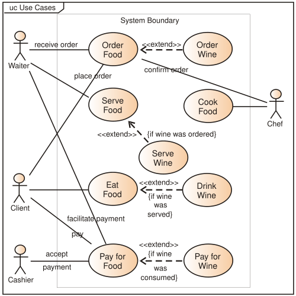
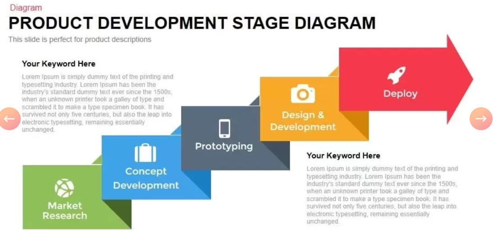

UML diagrammikeel
Mis on UML?
UML on visuaalne modelleerimiskeel, mis aitab tarkvaraarenduses nii kliendile, arendajaile endile
kui ka erinevatele muudele isikutele protsessi juures kuvada täpsemalt, milline arendatava toote
sisemine struktuur erinevatel tasanditel olema peaks. UML on aga haruskeel ehk teisisõnu on erinevaid
diagrammiliike nende erinevate tasandite kuvamise jaoks väga palju. UML defineerib ära nende erinevate
tasandite diagrammide notatsioonid, keskendudes siis nendel spetsiifilistel tasemetel vajamineva kirjeldusele.
Tarkvaratoote käitumise kirjeldamiseks on näiteks käitumisdiagramm, andmestruktuuri kirjeldamiseks on
nt. olemidiagramm (ERD). Ja nii erinevate aspektide kohta. UMLe kasutatakse nii uue arendustöö kirjeldamiseks
kui ka olemasoleva dokumenteerimiseks.
Kuidas UML tekkis?
UML tekkis vajadusest kujutada objektorienteeritud programmeerimise jaoks ühtset keelt, mis kuvaks
protsessi ilma koodita. Algselt tekkis see kui Grady Booch ja James Rumbaugh ühendasid oma diagrammikeeled,
kuhu siis aja jooksul tekkiski teisi harusid juurde. UML ise on akronüüm inglisekeelsest terminist
"Unified Modeling Language".
Mida saab kujutada UMLiga - ehk kui palju diagrammiliike olemas on?
Erinevaid UML liike on palju, näiteks:
- Vooskeem (Flowchart)
- Klassidiagramm (Class diagramm)
- Objekti diagramm (Object diagram)
- Koostöö diagramm (Collaboration diagramm)
- Olemidiagramm (Entity Relation Diagram)
- Kasutuslooskeem (Use Case Diagram)
- Olekuskeem(State Diagram)
- Tegevusdiagram (Activity Diagram)
- Komponendi diagramm (Component Diagramm)
- Kommunikatsioonidiagramm (Communication Diagramm)
- Ajastusskeem (Timing Diagram)
- Jadaskeem (Sequence Diagram)
- Levitusskeem (Development Diagram)
- Paketiskeem (Package Diagram)
- Profiildiagramm (Profile Diagram)
Mõningaid UML liike
Kasutuslooskeem
See on käitumist näitav diagramm, mis annab visuaalse ülevaate süsteemi funktsioonidest ning osapooltest (ka
funktsioonid) kes millise süsteemi osaga suhtleb. Skeem koosneb ristkülikust (süsteem), ovaalidest (funktsioonid)
ja kriipsujukudest ("näitleja" ehk kasutaja) ning osutavatest joontest (suhte nooled).
Skeemi näidis:

Klassidiagramm
See on levinud objektorienteeritud meetod, mida kasutatakse süsteemi kirjeldamiseks. Skeem
kirjeldab süsteemis olevate objektide tüüpe ja nende vahel eksisteerivaid erinevaid staatilisi seoseid.
Skeemil kujutatakse objekte ristkülikuna mis sisaldab endas: klassi nime, atribuute ning operatsioone.
Objektide vahel kujutatakse seoseid erinevate joonte/noolte abil. Kolm peamist seost on järgnevad:
- Ühendus (association) - Näitab klasside vahelist seost.
- Pärimine (Inheritance) - Näitab mis klassist pärineb. Alamklass pärib peaklassi omadused ja
käitumised.
- Koondamine (Aggregation) - Näitab suhet, kus üks klass(tervik) sisaldab teist klassi
või koosneb sellest.
Skeemi näidis:

Jadaskeem
See on joonis, mis näitab objektidevahelist koostööd süsteemis mingi aja jooksul.
Jadaskeem võib koosneda järgnevatest osadest:
- Näitleja (Actor) - Süsteemi kasutav isik (süsteemi väline).
- Elujoon (Lifeline) - Süsteemi olulised osad.
- Sõnumid (Messages) - Pidevjoonega nool millel "sõnum" või tegevus, esindab objektide või osade
vahelist suhtlust
- Loo sõnum (Create message) - Katkendjoonega nooled koos sõnumiga "Create", mõeldud millegi uue
loomiseks.
- Kustuta sõnum (Delete Message) - Pidevjoonega nool, mis lõpeb X-ga. Mõeldud juhuks kui objektilt
vabastatakse mälu või see süsteemis hävitatakse.
- Sõnum endale (Self Message) - Tagasipöörav nool, juhtudeks, kus objekt peab endale ise sõnumi
saatma.
- Vastus sõnum (Reply Message) - Punktiirjoone avatud noolepeaga, kasutatakse et näidata vastuse
saatmist vastuvõtjalt küsimuse saatjale.
- Leitud sõnum (Found Message) - Pidevjoonega nool lõpp-punktist (täidetud ring), kasutatakse
juhuks kus tundmatu allikas saadab sõnumi.
- Kadunud sõnum (Lost Message) - Pidevjoonega nool osutab lõpp-punkti, kasutatakse juhul kui sõnumi
saaja ei ole süsteemile teada.
- Kaitsmed (Guards) - Tingimus tekst nooltel. Kasutatakse, et näidata, piiranguid.
Skeemi näidis:

Olekuskeem
See diagrammitüüp kirjeldab süsteemide käitumist. Olekuskeemidel on kujutatud lubatud olekuid ja
üleminekuid ning sündmusi, mis neid üleminekuid mõjutavad. Olekuskeem aitab näha objektide kogu
elutsüklit ja mõista olekupõhiseid süsteeme.
Skeemi osad:
- Algne olek (Initial state) - Must täpp
- Üleminek (Transition) - Pidevjoonega nool
- Olek (State) - Ristkülik, olek kahe ülemineku vahel
- Lõppolek (Final state) - Rõnga sees must täpp
Skeemi näidis:

Levitusskeem
See on diagrammitüüp, mis kirjeldab, kuidas tarkvarasüsteem on füüsiliselt paigutatud ja käivitatud - st
millistes seadmetes/serverites eri osad töötavad ja kuidas need omavahel suhtlevad.
Skeemi osad:
- Sõlmed (nodes) - arvutid, serverid, telefonid, pilveteenused
- Rakendused/komponendid - mis tarkvara kus töötab
- Ühendused - võrk, API, HTTP, andmebaasiühendus jt
- Andmebaasid
Skeemi näidis:

UML (wikipedia)
UML (geeksforgeeks)
Kasutuslooskeem (wikipedia)
Klassidiagramm
Jadaskeem
Olekudiagramm
Levitusskeem